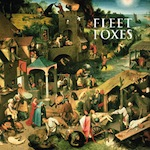

Top 100 Debut Albums (Part Four: 40 to 21)
Welcome to the fourth part of our Top 100 Debut Albums feature. Please use the links below to discover the rest of the feature. The fifth and final part will be published on Friday.
[Part One: 100 to 81] [Part Two: 80 to 61] [Part Three: 60 to 41] [Part Four: 40 to 21] [Part Five: 20 to 1]
40. ELVIS COSTELLO
My Aim Is True
(Stiff Records, 1977)
This glorious debut by the mighty Elvis Costello, released on UK's Stiff Records in 1977, crossed wordy and witty geek-dom with spiky punk. Far more intelligent and infinitely cooler than most other punk bands circling the scene at the time, this is as classic a debut as it gets. With Nick Lowe’s economical production, competent backing band Clover (this is pre-Attractions) and its iconic cover, My Aim is True would not only establish Elvis Costello as one his generation’s best lyricists, but would contain some of the finest songs, all filled with varying degrees of anger and verbal bile, in a career spanning four decades. (Pierce Brown)
39. LEONARD COHEN
Songs of Leonard Cohen
(Columbia, 1967)
Often unfairly compared to Dylan, Leonard Cohen is an undeniable master of music and the written word. The only noticeable similarity between Dylan and Cohen is their reputation as singer/songwriters of the 60s; beyond that, Cohen’s literary acumen, his crisp, distinguished voice, and the classical playing he brought into the folk scene placed him in an artistic league – a “tower of song” – that few have reached. His debut comes later in his literary career, after publishing a couple volumes of poetry and two novels, and shows a man more literate and more experienced than the abrasive naiveté that flooded the late 60s. By no means is Cohen’s voice immediately accessible, but any appreciation one may have of the poetry, his vast wit and intellect, and the beautiful music should shelf this gorgeous LP between Frost and Auden. (David Hogg)
38. BIG STAR
#1 Record
(Ardent, 1972)
It’s been a long coming, but it’s safe to say that power-pop troupe Big Star have finally earned their place in the classic rock pantheon. Carrying on the legacy of sixties jangle and psychedelia, the Memphis group were continually dismissed as antiquated rockers, playing the old-fashioned cards when American audiences were blowing away the ashes of Beatles worship and beginning to look into the testosterone-fueled bravado of American bluesmen. #1 Record may have been a victim of ill-fated timing, but like all prevailing art, its resounding, classic-by-design harmonies have inspired a heap of more successful bands like R.E.M. and Teenage Fanclub to sing their praises, advising budding musicians and record aficionados to take notice. As main songwriter Alex Chilton progressively took the band into a more befuddling direction, it was the sole songwriting partnership between him and Chris Bell in 1972 that continues to thrive with its convivial atmosphere and truly indomitable rock n’ roll spirit. (Juan Edgardo Rodriguez)
37. DJ SHADOW
Endtroducing.....
(Mo' Wax, 1996)
DJ Shadow doesn’t need to record anything anymore. Sure, they’ll be diehards who’ll buy his shit, but his work’s been done. Endtroducing..... is like Michelangelo’s Sistine Chapel. Enough’s been written and said about it; it’s been seen enough. Endtroducing.....’s been listened to enough. Why’s that? Because it’s the beginning of the instrumental hip-hop renaissance. Nuff said. If this record hasn’t inspired thousands to become DJs, I don’t know what has. (Michael Iovino)
Playlist: Midnight In A Perfect World
36. PEARL JAM
Ten
(Epic, 1991)
In August we celebrated the 20-year anniversary of Ten and millions of music blogs and news sources were happy to remind us of this epic occasion. After fighting the nausea brought on by the horrific fact that we all indeed became older over this time period, some of us sank into a drunken nostalgic state recalling how Ten escorted us into grunge rock. With themes such as homelessness, depression and suicide, Pearl Jam became synonymous with a societal gut check. Eddie Vedder’s sharp and dense howls coated the entire album, but the singles Jeremy, Alive and Even Flow were the pulse. Each and every track has an unyielding chord progression that drives into you. Anyone who was on the fence about jumping on the grunge bandwagon at that moment in time, Pearl Jam was a deciding factor. Ten was and is a glorious piece of awareness of human life. Each compartment has exceptional quality. Since most of this album stemmed from carefully composed instrumentals, which were then layered with brilliant thought-provoking lyrics, and finally fueled by a conglomerate of perfectionists, ignoring it was not an option. (Randi Dietiker)
35. RAGE AGAINST THE MACHINE
Rage Against The Machine
(Epic, 1992)
Rage Against the Machine’s self titled debut is a burst of rap-metal fire in the face of bigots and war mongers around the globe. On a flaming funk foundation laid by bassist Tim Commerford and drummer Brad Wilk, lead vocalist Zack de la Rocha guns down every hypocrite and crooked politician conceivable with a fury of rhymes as Tom Morello blends rock/hip hop sounds with sonic metal, creating an undeniably signature sound and implementing the most innovative use of a guitar in the last twenty years. This album changed every game. Not just the rap game or the rock game, it changed the political game and brought mass awareness to issues listeners weren’t familiar with by hiding nothing and presenting every truth naked and raw. This isn’t music, this is power. (Luredo Marbery)
34. BJÖRK
Debut
(One Little Indian, 1993)
First, a disclaimer: yes, we’re aware that Björk released a solo album prior to this, but as she’s disowned it as juvenilia, and as barely anybody outside of Iceland’s heard it, we’re not counting it. It’s fair to say that not many Björk fans would pick Debut as their favourite, probably because its production sounds the most ‘of its time’. That doesn’t stop it being an important milestone in her career, or just a very entertaining listen. Freshly out of The Sugarcubes and left to her own devices, Björk’s excitement is palpable, as is a feeling that anything was possible – not many artists could pull off both the youthful lairiness of There’s More To Life Than This and the heartbreak of Play Dead. Even more wonderfully, Debut also acts as a reminder of that glorious period when her bonkers style was very nearly part of the mainstream. (Mark Davison)
33. TALKING HEADS
Talking Heads: 77
(Sire, 1977)
The Talking Heads will forever be a band that you can identify within seconds of play. When they opened up for the Ramones in 1975, playing for the first time as Talking Heads, attendees felt the weight of the new wave that would officially blow their skirts up in 1977 with the release of Talking Heads: 77. This was music that finally encompassed the mentality of the nerd. It’s silly yet brilliant, uneasy but fun. David Byrne’s drunken vocals lured you into a funhouse that was placed in a punk community, but definitely didn’t sound like it. They stretched the music in a way that made you feel comfortable with being uncomfortable. Psycho Killer remains to be one of their most beloved, paranoid sounds that showcase their pure eccentricity. Talking Heads: 77 will remain an important fixture in the world of art rock. (Randi Dietiker)
32. NIRVANA
Bleach
(Sub Pop, 1989)
Being the album that preceded Nirvana’s very successful and culturally altering release Nevermind, Bleach, the cheaply made byproduct of Kurt Cobain’s want of abrasive noise rock, punk ferocity and pop melody, stands as the band’s only independent full-length release and recalls that point in time before mainstream America caught wind of “grunge” and the idea of an “other” music, before “alternative” became anything but. The album itself could be said to be rooted mostly in Cobain’s penchant for drama, whether that be found in his finding angst in the inane (Floyd The Barber) or straining his throat to make an impression (Paper Cuts), but the tenderness of About A Girl, the off kilter and discordant School or the jam-influenced Big Cheese all suggest that the band had passion, ambition and potential. Some could argue that Bleach represents Nirvana at their most authentic and there could be some credence to that claim. But, Bleach’s true importance lay in its place in music history, a starting point for a band that had no idea it would signal the beginning of a new era. (Sean Caldwell)
31. KANYE WEST
The College Dropout
(Roc-A-Fella / Def Jam, 2004)
Modest. Humble. Restrained. Shy. These are all things Kanye West is not. But why should he be? After paying his dues to Jay-Z as a producer and struggling to ink a record deal as an emcee, Kanye showed the hip-hop world what Jesus walk like with his triple-platinum, Grammy award-winning debut, The College Dropout. Lead single Through the Wire, recorded with his jaw wired shut, catapulted him into the limelight and paved the way for three more top-20 singles including Jesus Walks, which was ultimately nominated for Song of the Year. Commercial and critical success for an album are rarely correlated, but consider this one of many areas in which The College Dropout overachieves. Major media outlets praised both the soulful beats and the scintillating lyrics, which deserve credit for decrying the “thug life” idolized by many of his industry peers. Hate him or love him, the self-proclaimed Lous Vuitton Don proved right away that there’s talent to support that enormous ego, and The College Dropout deserves to be heralded as a standout album, debut or not. (Ben Jones)
30. FLEET FOXES
Fleet Foxes
(Sub Pop, 2008)
It’s heartening to realize that three of the largest breakout indie acts of the 00s — Arcade Fire, Sufjan Stevens, Fleet Foxes — were all acts that put their music first and their story/image later. They were real musicians, the earnest ones, the ones you’d make fun of if they weren’t so famous. But Stevens had his conceptual fifty states gimmick, Arcade Fire had the hurdygurdy. Fleet Foxes are just five bearded dudes not from Brooklyn, with nothing to sell themselves with but their songs, and so it’s a testament to their uncannily powerful songs that we’re even aware of them. Put on Fleet Foxes and what do you hear? Warmth. Home, possibly. Vocal harmonies and snippets of mandolin that shine like sun-bathed statues. Real music, old music, the kind that relies on melodies and stuff. The kind of music that could touch peoples hearts all around the globe. And so it did. (Japie Stoppelenburg)
Playlist: Blue Ridge Mountains
 29. PORTISHEAD
29. PORTISHEAD
Dummy
(Go Beat!, 1994)
Looking back, there are so many factors counting against Portishead’s debut. Dummy might have managed to successfully circumvent ‘the curse of the Mercury prize’, but still faced audience fatigue from overuse on TV soundtracks (I blame This Life) and, rather unfairly, being branded with the term 'dinner party music'. Even worse, as it was credited as the record that launched a genre, there's also been the danger of it becoming regarded more as an 'historical document' than as a album. Incredibly though, even with all that going on, Dummy’s actually lost none of its power; stick it on and listen to it properly and try not to be moved by Portishead's intimate soundscapes and Beth Gibbons' pained vocals. Weirdly, with its crackly vinyl tones and jazz influence, its also the warmest and most immediately inviting of their albums. (Mark Davison)
28. WU-TANG CLAN
Enter The Wu-Tang (36 Chambers)
(Loud, 1993)
A collective of personalities brought together by producer/rapper, The RZA, Wu-Tang Clan were at the height of hip-hop’s output for a while, peerless in rhyme or rhythm. Enter The Wu-Tang (36 Chambers) exhibited not only the group in their pop culturally addled reality whose perspective was interestingly affected by martial arts films, the criminality of the streets and a steady haze of pot smoke, but the album also took the focus off of the hoopla surrounding the west coast with Gangsta rap and brought a new and very grimy sound to the masses via RZA’s approach with soul and funk samples and the benefit of cheap equipment. You also can’t deny the talent or charisma of the album’s nine MCs, all of whom could bring a sense of the ludicrous (Ol’ Dirty Bastard), the raw (Method Man), the flow (GZA/Genius) and the bulletproof (Raekwon, Ghostface Killah, Inspectah Deck) in terms of word play, voice and inflection. (Sean Caldwell)
27. THE JESUS AND MARY CHAIN
Psychocandy
(Blanco y Negro)
Psychocandy was one of the main progenitors of shoegaze, helping to launch a movement like few other albums have. The loud-quiet-loud dynamics, combined with relaxed, hovering vocals spurred on other innovators and spawned many more imitators. It’s a wonderful record, but one so important that its songs are often less examined than its tremendous influence. It’s a sad state for an album to be in, especially one that’s fantastic from start to finish. (Andrew Baer)
26. BRIAN ENO
Here Come The Warm Jets
(Island, 1974)
As a distinctive component of the first two Roxy Music albums, it wasn’t until his departure from the group that Eno and his experimental-cum-glam rock techniques were finally free to jettison around. Seated at the throne of his self-expanding universe well before his later ambient scaffolding was established, Here Come the Warm Jets feels like an engine firing in all directions. Needles in the Camel's Eye is the boisterous door of the album swinging open, and it's only one of the many coloured chapters in the manic flight path of craftily warped fabrics and pop hooks: Sunday morning balladry, space-walk monotone, choral figuring and the soundtrack of a madly deflating balloon; its disparate parts could seem like the props of Brazil. But by the time the drums sync into rhythm on the final track, you realize it’s his craft for stylistic amalgamation that makes it so unique. (Tara Campbell)
Playlist: Needles in the Camel’s Eye
25. THE STONE ROSES
The Stone Roses
(Silvertone, 1989)
I can confidently state that I’ve listened to The Stone Roses more than any other album ever recorded. It dominated my late teens and was for a considerable time my yardstick of greatness in popular music. Listening to it today, I’m still struck by how fresh it sounds. Waterfall’s chiming riff still sends chills down my spine, but it is the record’s stunning finale that truly steals the show. Reni’s simple yet insistent beat, Mani’s lively bass work, and Squire’s faultless guitar shapes provide a canvas for Brown to make his boldest claim of all: I Am The Resurrection. Squire even manages to keep a lid on his Jimmy Page fetish during the extended jam at the end. To call it a guitar solo would be unfair; Mani and Reni are just as instrumental in the success of this passage of music, which is arguably the pinnacle of The Stone Roses’ career. An eight minute glimpse of pop music heaven, and the perfect close to one of the finest debuts of all-time. (David Coleman
Playlist: I Am The Resurrection
24. THE BEATLES
Please Please Me
(Parlophone, 1963)
The standard line is that this album, recorded in one 17 hour session, was simply transferring the band’s typical live set to the recording studio. Certainly they drew from songs they knew well and could play quickly and easily, but a closer look reveals that, even at this early stage, they understood the crucial difference between LP listening and live performance. There were plenty of other songs in their repertoire more exciting than Chains or Anna, but they were already thinking about the album as a separate and distinct entity. This one, like all their early albums, was a paean to love in all its forms, from lust to heartbreak, from devotion to disappointment. No wonder the girls went crazy. (Alan Shulman)
Playlist: Not available on Spotify
23. GODSPEED YOU! BLACK EMPEROR
F#A# Infinity
(Constellation, 1997)
Godspeed You! Black Emperor enlarged Mogwai’s music project into unmapped areas. Each track is like a sonata, with parts and movements that come one after the other in distinguishable fashion. The whole thing sounds way too haunted. The portrait they paint of Canada is bleak and gray, distastefully unseasonable, with railroad tracks like symbols of abandoned promise. Dynamics shift drastically. The listener, pulled by gravity into a waste land, accepts this. And when the guitars, drums, and violins gather together to blast off, there’s a kind of catharsis established, that feels hard to shake off even after repeated listens. With tears and blood, Godspeed have molded one hell of a soundscape. (Michael Iovino)
22. BELLE AND SEBASTIAN
Tigermilk
(Electric Honey, 1996)
Although it didn’t get a full release until 1999, Tigermilk kicked off the remarkable run of four albums and seven EPs in five years for Scottish indie collective Belle and Sebastian. All the elements that set them apart from their peers in the early days are here – intriguing, third-person stories, sugar-sweet melodies and delicate instrumentation – but there’s a playfulness and willingness to experiment on Tigermilk which doesn’t feature as much on latter work. Certainly they’ve never recorded something quite as dancey as Electronic Renaissance since. It’s the cast of characters that inhabit Tigermilk’s songs that make it so special though; the bookish outsider in Expectations, Lisa and Chelsea in She’s Losing It, the titular heroine in Mary Jo. Belle & Sebastian were making music about their fans, for their fans. (Joe Rivers)
21. MOGWAI
Young Team
(Chemikal Underground, 1997)
Post-rock had existed before Simon Reynolds coined the term in 1994, Slint’s Spiderland (1991) being a frequently cited and influential early example. Tortoise’s Millions Now Living Will Never Die was a high watermark of the US variant in 1996. By the late 90s however, the term had begun to lose any meaning, being applied willy-nilly to any band playing instrumental songs and sporting beards. Mogwai fulfilled the promise of their early singles on their debut album, clearly indebted to Slint with its loud/quiet dynamics and plucked harmonics, but very much more Rock than Post. Standout tracks are undoubtedly the two epic cornerstones, Mogwai Fear Satan, a track that builds relentlessly on a simple ascending melody, and Like Herod, whose blast of guitar and drums three minutes in still sounds like the end of the world, even though you’ve heard it a thousand times. (David John Wood)
. . .
[Part One: 100 to 81] [Part Two: 80 to 61] [Part Three: 60 to 41] [Part Four: 40 to 21] [Part Five: 20 to 1]
1 December, 2011 - 08:00 — No Ripcord Staff